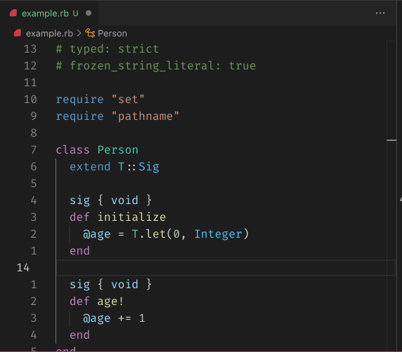

class RubyLsp::Requests::SemanticHighlighting

The semantic highlighting request informs the editor of the correct token types to provide consistent and accurate highlighting for themes.
Example¶ ↑
def foo var = 1 # --> semantic highlighting: local variable some_invocation # --> semantic highlighting: method invocation var # --> semantic highlighting: local variable end
Constants
- ResponseType
- SPECIAL_RUBY_METHODS
- TOKEN_MODIFIERS
- TOKEN_TYPES
Attributes
_response[R]
Public Class Methods
new(dispatcher, message_queue, range: nil)
click to toggle source
Calls superclass method
RubyLsp::Listener::new
# File lib/ruby_lsp/requests/semantic_highlighting.rb, line 117 def initialize(dispatcher, message_queue, range: nil) super(dispatcher, message_queue) @_response = T.let([], ResponseType) @range = range @special_methods = T.let(nil, T.nilable(T::Array[String])) @current_scope = T.let(ParameterScope.new, ParameterScope) dispatcher.register( self, :on_call_node_enter, :on_class_node_enter, :on_def_node_enter, :on_def_node_leave, :on_block_node_enter, :on_block_node_leave, :on_self_node_enter, :on_module_node_enter, :on_local_variable_write_node_enter, :on_local_variable_read_node_enter, :on_block_parameter_node_enter, :on_required_keyword_parameter_node_enter, :on_optional_keyword_parameter_node_enter, :on_keyword_rest_parameter_node_enter, :on_optional_parameter_node_enter, :on_required_parameter_node_enter, :on_rest_parameter_node_enter, :on_constant_read_node_enter, :on_constant_write_node_enter, :on_constant_and_write_node_enter, :on_constant_operator_write_node_enter, :on_constant_or_write_node_enter, :on_constant_target_node_enter, :on_local_variable_and_write_node_enter, :on_local_variable_operator_write_node_enter, :on_local_variable_or_write_node_enter, :on_local_variable_target_node_enter, :on_block_local_variable_node_enter, ) end
Public Instance Methods
on_block_local_variable_node_enter(node)
click to toggle source
# File lib/ruby_lsp/requests/semantic_highlighting.rb, line 246 def on_block_local_variable_node_enter(node) add_token(node.location, :variable) end
on_block_node_enter(node)
click to toggle source
# File lib/ruby_lsp/requests/semantic_highlighting.rb, line 236 def on_block_node_enter(node) @current_scope = ParameterScope.new(@current_scope) end
on_block_node_leave(node)
click to toggle source
# File lib/ruby_lsp/requests/semantic_highlighting.rb, line 241 def on_block_node_leave(node) @current_scope = T.must(@current_scope.parent) end
on_block_parameter_node_enter(node)
click to toggle source
# File lib/ruby_lsp/requests/semantic_highlighting.rb, line 251 def on_block_parameter_node_enter(node) name = node.name @current_scope << name.to_sym if name end
on_call_node_enter(node)
click to toggle source
# File lib/ruby_lsp/requests/semantic_highlighting.rb, line 159 def on_call_node_enter(node) return unless visible?(node, @range) message = node.message return unless message # We can't push a semantic token for [] and []= because the argument inside the brackets is a part of # the message_loc return if message.start_with?("[") && (message.end_with?("]") || message.end_with?("]=")) return process_regexp_locals(node) if message == "=~" return if special_method?(message) type = Support::Sorbet.annotation?(node) ? :type : :method add_token(T.must(node.message_loc), type) end
on_class_node_enter(node)
click to toggle source
# File lib/ruby_lsp/requests/semantic_highlighting.rb, line 368 def on_class_node_enter(node) return unless visible?(node, @range) add_token(node.constant_path.location, :class, [:declaration]) superclass = node.superclass add_token(superclass.location, :class) if superclass end
on_constant_and_write_node_enter(node)
click to toggle source
# File lib/ruby_lsp/requests/semantic_highlighting.rb, line 195 def on_constant_and_write_node_enter(node) return unless visible?(node, @range) add_token(node.name_loc, :namespace) end
on_constant_operator_write_node_enter(node)
click to toggle source
# File lib/ruby_lsp/requests/semantic_highlighting.rb, line 202 def on_constant_operator_write_node_enter(node) return unless visible?(node, @range) add_token(node.name_loc, :namespace) end
on_constant_or_write_node_enter(node)
click to toggle source
# File lib/ruby_lsp/requests/semantic_highlighting.rb, line 209 def on_constant_or_write_node_enter(node) return unless visible?(node, @range) add_token(node.name_loc, :namespace) end
on_constant_read_node_enter(node)
click to toggle source
# File lib/ruby_lsp/requests/semantic_highlighting.rb, line 177 def on_constant_read_node_enter(node) return unless visible?(node, @range) # When finding a module or class definition, we will have already pushed a token related to this constant. We # need to look at the previous two tokens and if they match this locatione exactly, avoid pushing another token # on top of the previous one return if @_response.last(2).any? { |token| token.location == node.location } add_token(node.location, :namespace) end
on_constant_target_node_enter(node)
click to toggle source
# File lib/ruby_lsp/requests/semantic_highlighting.rb, line 216 def on_constant_target_node_enter(node) return unless visible?(node, @range) add_token(node.location, :namespace) end
on_constant_write_node_enter(node)
click to toggle source
# File lib/ruby_lsp/requests/semantic_highlighting.rb, line 188 def on_constant_write_node_enter(node) return unless visible?(node, @range) add_token(node.name_loc, :namespace) end
on_def_node_enter(node)
click to toggle source
# File lib/ruby_lsp/requests/semantic_highlighting.rb, line 223 def on_def_node_enter(node) @current_scope = ParameterScope.new(@current_scope) return unless visible?(node, @range) add_token(node.name_loc, :method, [:declaration]) end
on_def_node_leave(node)
click to toggle source
# File lib/ruby_lsp/requests/semantic_highlighting.rb, line 231 def on_def_node_leave(node) @current_scope = T.must(@current_scope.parent) end
on_keyword_rest_parameter_node_enter(node)
click to toggle source
# File lib/ruby_lsp/requests/semantic_highlighting.rb, line 275 def on_keyword_rest_parameter_node_enter(node) name = node.name if name @current_scope << name.to_sym add_token(T.must(node.name_loc), :parameter) if visible?(node, @range) end end
on_local_variable_and_write_node_enter(node)
click to toggle source
# File lib/ruby_lsp/requests/semantic_highlighting.rb, line 340 def on_local_variable_and_write_node_enter(node) return unless visible?(node, @range) add_token(node.name_loc, @current_scope.type_for(node.name)) end
on_local_variable_operator_write_node_enter(node)
click to toggle source
# File lib/ruby_lsp/requests/semantic_highlighting.rb, line 347 def on_local_variable_operator_write_node_enter(node) return unless visible?(node, @range) add_token(node.name_loc, @current_scope.type_for(node.name)) end
on_local_variable_or_write_node_enter(node)
click to toggle source
# File lib/ruby_lsp/requests/semantic_highlighting.rb, line 354 def on_local_variable_or_write_node_enter(node) return unless visible?(node, @range) add_token(node.name_loc, @current_scope.type_for(node.name)) end
on_local_variable_read_node_enter(node)
click to toggle source
# File lib/ruby_lsp/requests/semantic_highlighting.rb, line 327 def on_local_variable_read_node_enter(node) return unless visible?(node, @range) # Numbered parameters if /_\d+/.match?(node.name) add_token(node.location, :parameter) return end add_token(node.location, @current_scope.type_for(node.name)) end
on_local_variable_target_node_enter(node)
click to toggle source
# File lib/ruby_lsp/requests/semantic_highlighting.rb, line 361 def on_local_variable_target_node_enter(node) return unless visible?(node, @range) add_token(node.location, @current_scope.type_for(node.name)) end
on_local_variable_write_node_enter(node)
click to toggle source
# File lib/ruby_lsp/requests/semantic_highlighting.rb, line 320 def on_local_variable_write_node_enter(node) return unless visible?(node, @range) add_token(node.name_loc, @current_scope.type_for(node.name)) end
on_module_node_enter(node)
click to toggle source
# File lib/ruby_lsp/requests/semantic_highlighting.rb, line 378 def on_module_node_enter(node) return unless visible?(node, @range) add_token(node.constant_path.location, :namespace, [:declaration]) end
on_optional_keyword_parameter_node_enter(node)
click to toggle source
# File lib/ruby_lsp/requests/semantic_highlighting.rb, line 266 def on_optional_keyword_parameter_node_enter(node) @current_scope << node.name return unless visible?(node, @range) location = node.name_loc add_token(location.copy(length: location.length - 1), :parameter) end
on_optional_parameter_node_enter(node)
click to toggle source
# File lib/ruby_lsp/requests/semantic_highlighting.rb, line 286 def on_optional_parameter_node_enter(node) @current_scope << node.name return unless visible?(node, @range) add_token(node.name_loc, :parameter) end
on_required_keyword_parameter_node_enter(node)
click to toggle source
# File lib/ruby_lsp/requests/semantic_highlighting.rb, line 257 def on_required_keyword_parameter_node_enter(node) @current_scope << node.name return unless visible?(node, @range) location = node.name_loc add_token(location.copy(length: location.length - 1), :parameter) end
on_required_parameter_node_enter(node)
click to toggle source
# File lib/ruby_lsp/requests/semantic_highlighting.rb, line 294 def on_required_parameter_node_enter(node) @current_scope << node.name return unless visible?(node, @range) add_token(node.location, :parameter) end
on_rest_parameter_node_enter(node)
click to toggle source
# File lib/ruby_lsp/requests/semantic_highlighting.rb, line 302 def on_rest_parameter_node_enter(node) name = node.name if name @current_scope << name.to_sym add_token(T.must(node.name_loc), :parameter) if visible?(node, @range) end end
on_self_node_enter(node)
click to toggle source
# File lib/ruby_lsp/requests/semantic_highlighting.rb, line 313 def on_self_node_enter(node) return unless visible?(node, @range) add_token(node.location, :variable, [:default_library]) end